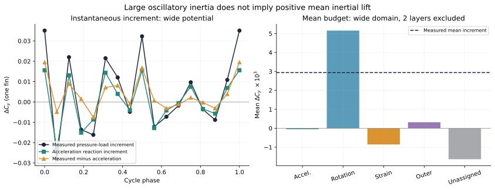
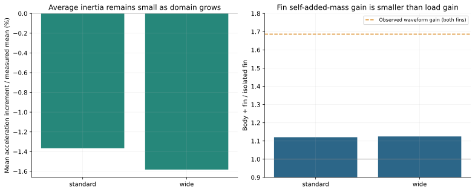
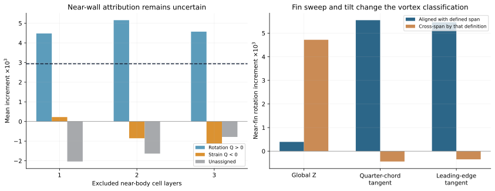
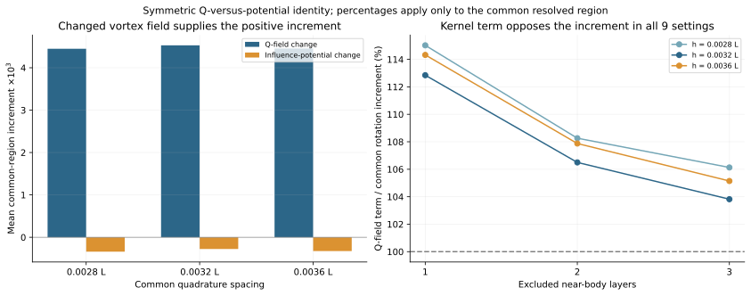
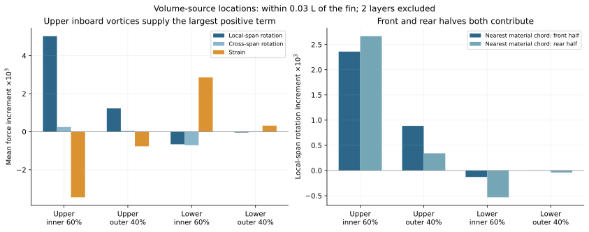
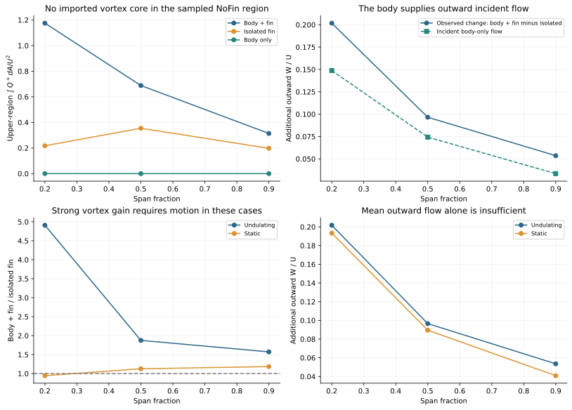

Orca 胸鳍增升：与涡有关，还是“放大”占主导？
现有数据最支持的解释：身体与运动胸鳍的耦合改变了胸鳍附近的旋转占优流场，增强上方、尤其内侧区域的涡相关吸力，产生平均增升。表面加速度反力显著影响瞬时载荷幅值，但其平均增量很小。把同一涡场仅按几何影响权重放大，也解释不了这里的平均涡增力。
在共同可解析区域，Q 场变化贡献 106.5% 的平均旋转相关增量，几何影响权重变化贡献 -6.5%；两者相加为 100%。这是该区域的代数分解，不是“涡解释了总升力的 106.5%”。
“放大”至少包含三个不同问题：观测到的载荷波形增益；附加质量／身体加速度耦合；以及同一流场通过不同几何影响函数产生的力变化。本研究分别计算它们，避免把现象和机制混为一谈。
1 先确认研究对象和增升量
| 状态 | 带身体：双胸鳍平均压力 Cy | 孤立双胸鳍 | 比值 | 差值 |
|---|---|---|---|---|
| 运动 | 0.015743 | 0.009865 | 1.5958 | 0.005878 |
| 静态 | 0.007577 | 0.006860 | 1.1045 | 0.000717 |
当前数据复现约 1.596 倍，即增加约 59.6%。静态不是严格零：同一压力口径约增加 10.5%，其绝对增量约为动态增量的 12.2%。运动条件下的额外差值约 0.005160，但这个差分不是自动成立的因果分量。
共同几何含 4,855 个完全匹配三角面，覆盖带身体胸鳍面积约 90.8%、孤立鳍约 92.8%；其运动逐相位匹配。共同面升力增量同样存在，非共同面净贡献略为负值。既有压力结论也通过上游参考压力检查，主要增升不是压力零点或多算鳍根面积造成的。
本轮三维辅助势针对 负 Z 一侧胸鳍计算，测得平均增量为 0.002938。所有本轮力预算使用该单鳍口径，不能与双鳍数值直接相加。统一归一化为 Cy = 2Fy/(ρU²S)，U = 0.29，S = 0.548382，ρ = 1，L = 1。这里研究的是压力升力；区域皮肤摩擦力未单独重构。
2 用了哪些文献方法，做了哪些必要修改
Liu、Ren、Dong 等（2017）提供身体—鳍相互作用、分区压力和涡动力学的分析思路；Guo、Dong 等（2023）提示必须区分上游输入的涡与鳍自身形成的涡。因此加入现有 NoFin 流场作为入流诊断，而不预设“身体涡增强胸鳍涡”的故事。
Menon、Kumar、Mittal（2022）用辅助势把 Q 与力相连，并强调涡周围的应变不能忽略；Prakhar、Seo、Mittal（2025）把移动表面的加速度反力与涡、粘性、外边界作用分开。Han、Zhong、Quinn、Moored 等（2024）区分非定常惯性与平均力来源；这里没有直接套用其特定运动下的零平均附加质量结论，而是用 Orca 的 480 个运动记录核算。
胸鳍是连在身体上的开放表面子区域，不能直接把整封闭物体的零外法向通量边界条件搬过来。这里采用局部混合边界辅助问题，保留外边界压力项：
n 指向流体域外，即在实体表面指向身体内。由 Green 恒等式和压力 Poisson 方程，在连续理想条件下：
这里的外边界项是压力项，与通常全 Neumann FPM 的外边界加速度项形式不同。实现使用原生 Cartesian 网格和流固标记的有限体积近似，求解 Aφ = b。对导出的压力，pᵀb = φᵀAp 是严格的离散恒等式；它验证力泛函和求解器，却不能证明从速度梯度估计的物理分量已经闭合。
每个相位直接从三维 U、V、W 求 ∇u，再算 Q = −½ tr[(∇u)²] 和 ω；没有把二维 Wz 或涡环量当作三维升力。加速度来自 480 点 fort.41，先对运动记录作时间差分；没有用 17 帧位置的二次差分代替真实加速度。
3 瞬时放大确实存在，但不能解释平均增升
双鳍载荷波形的经验拟合约为 Cbody+fin(t) = 1.6866 Cisolated(t) − 0.000896，相关系数 0.9991。这是波形关系，不是力的物理分解。

| 辅助势范围 | 平均 ΔCB ×10³ | 占测得平均增量 | ΔCB 波动标准差 | 与增量波形相关 | 鳍自附加质量比 |
|---|---|---|---|---|---|
| standard | -0.0401 | -1.4% | 0.008866 | 0.9672 | 1.1207 |
| wide | -0.0465 | -1.6% | 0.011375 | 0.9680 | 1.1249 |
全身范围结果中，加速度反力增量的标准差为 0.011375，测得增量标准差为 0.017669；二者相关系数 0.9680。这支持强非定常惯性响应参与瞬时放大。其平均增量仅为 -0.0465 ×10−3，无法产生约 +2.9383 ×10−3 的正平均增升。
几何辅助势还给出对目标鳍单位均匀竖直加速度的响应。带身体／孤立鳍的比值约 1.125，小于约 1.69 的载荷波形增益。因而“鳍自己的 added mass 变成 1.6 倍”也不是准确解释：还存在身体及其他表面加速度对目标鳍的耦合。
| baseline 中的加速度来源 | 平均 CB ×10³ | 波动标准差 |
|---|---|---|
| 目标胸鳍 | -0.3781 | 0.029928 |
| 对侧胸鳍 | +0.0000 | 0.000000 |
| 非胸鳍表面：身体、背鳍、尾鳍 | -0.0966 | 0.008140 |
| 合计 | -0.4747 | 0.038067 |
这里的来源分区是同一个 baseline 辅助势下的边界项，不是把 NoFin 算例的压力直接加到孤立鳍上。各分量逐时刻可加，但标准差不能直接相加。鳍自附加质量增加与后文 Qφ 几何权重项略为负并不矛盾：前者是单位加速度的边界响应，后者加权的是有空间正负抵消的体积流场。
密集时间核查把 17 个相位的材料面影响权重插值到全部 480 个运动时刻。固定影响权重乘周期加速度的平均值为数值零；随几何变化的权重产生小的非零均值。线性和 Fourier 权重插值仅是时间敏感性检查，不等于独立求解了 480 个辅助势。

4 旋转与应变的平均力预算
| 项 | 平均增量 ×10³ | 与测得净增量的比值（预算口径） |
|---|---|---|
| 表面加速度反力 | -0.0465 | -1.6% |
| 旋转占优区域 Q > 0 | +5.1576 | 175.5% |
| 应变占优区域 Q < 0 | -0.8536 | -29.1% |
| 外边界压力项 | +0.3153 | 10.7% |
| 未归属项（必须保留） | -1.6345 | -55.6% |
| 合计／测得增量 | +2.9383 | 100.0% |
Q > 0 区域给出主要的正解析贡献。在参考设置中，Q < 0 区域合计抵消部分增力。应变并非处处减升：上方应变与下方应变的符号不同，必须带着 φ 的符号积分。参考表的旋转项超过净增量，表示存在相互抵消，不是“贡献率超过物理上限”。
近壁第一层使用单侧速度梯度时散度误差显著增大；全体素 Q、导出 Q/Wz 和排除近壁层的结果差别不可忽略。排除 1、2、3 层时，旋转增力均为正；应变合计和未归属项更敏感。因此本文把“旋转增力的符号与主要位置”作为较可靠结果，把精确全域份额作为未解决问题。

5 不是同一涡场被几何权重放大：Q 场变化占主导
在同一物理位置、两算例都具有有效流体差分模板的区域，采用对称恒等式。令 K = −2ρQφ：
第一项固定平均影响权重，测量流场 Q 的改变；第二项固定平均 Q，测量影响权重的改变。对 Q⁺ = max(Q,0) 单独应用，得到旋转占优部分的分解。它不依赖先改哪一个量的顺序。
| 共同区域、参考设置 | 平均 ΔC ×10³ | 该区域旋转增量中的比值 |
|---|---|---|
| Q 场改变 | +4.5293 | 106.5% |
| 几何影响权重改变 | -0.2764 | -6.5% |
| 两者合计 | +4.2529 | 100% |
使用 0.0028、0.0032、0.0036 L 三种积分点间距，并排除 1–3 层近壁网格，Q 场项比例为 103.8–115.0%；权重项在全部九个设置中均为负。基准共同区域保留的旋转增量约为原生近鳍旋转增量的 83.2%。被排除的非共同区域没有被强行分配给某种机制。
| 辅助势范围，均为参考积分设置 | Q 场项 ×10³ | 权重项 ×10³ | Q 场项／该区域增量 |
|---|---|---|---|
| wide | +4.5293 | -0.2764 | 106.5% |
| standard | +4.4918 | -0.1829 | 104.2% |
净权重项为负不代表所有位置都为负。在最重要的上方内侧区域，Q 场变化约占该区域旋转增量的 97.3%，几何权重约占 2.7%。这里同样由流场改变主导。
这一结果直接反对“涡基本不变，只是身体把同一涡的力几何放大”的解释。它支持旋转占优流场发生了实质增强／重组。Q 的改变涉及旋转与局部应变的相对强度，不能简单等同于涡量模长增加。φ 的改变也同时包含目标表面定义、身体几何和有限外边界变化，不能单独称为纯身体效应。

6 究竟是哪类涡，在哪里产生正增力？
必须随真实鳍几何定义展向。相位 0、20% 展长处的四分之一弦线切向约为 (−0.5166, 0.5160, 0.6833)。一个完全沿真实展向的涡，其 |ωz|/|ω| 约为 0.683，低于常用的 0.75 阈值；若把全局 Z 直接当作展向，会把它错判为 cross-span。
在距鳍表面 0.03 L 内、排除两层近壁点时，按局部四分之一弦线划分，展向旋转增量为 +5.5505 ×10−3，横跨该展向的旋转增量为 -0.4385 ×10−3。改用前缘切向，展向结果为 +5.4593 ×10−3。把方向阈值从 0.5 改到 0.9，展向项仍承担该近鳍净旋转增量的约 91.2–108.6%。
| 流体源区域 | 旋转 Q>0 增量 ×10³ | 局部展向旋转 ×10³ | 应变 Q<0 增量 ×10³ |
|---|---|---|---|
| 上方，内侧 60% | +5.2701 | +5.0239 | -3.4489 |
| 上方，外侧 40% | +1.2757 | +1.2268 | -0.7665 |
| 下方，内侧 60% | -1.3724 | -0.6596 | +2.8600 |
| 下方，外侧 40% | -0.0614 | -0.0406 | +0.3193 |
正旋转增量最大的是上方内侧 60% 区域，约占上方两个区域正旋转增量之和的 80.5%。前半弦占局部展向净旋转增量约 56.1%，后半弦约 43.9%。所以可以说沿展向的近鳍涡相关吸力重要，但不能把所有增升归给某一个 LEV。
“前／后半弦”按照最近的材料三角面定位，不等于已经识别出 LEV／TEV；被前缘生成后输运到后半弦的同一个涡，也可能跨越这两个区域。本轮没有宣称完成单个涡管的身份跟踪。
增强主要是体积变大，还是强度提高？
| 上方流体区域 | Q>0 平均体积比 | 体积时间加权 Q 强度比 | Q⁺ 积分比 | Q 加权距表面／L：带身体、孤立 |
|---|---|---|---|---|
| 内侧 60% | 0.923 | 2.366 | 2.184 | 0.01343，0.01357 |
| 外侧 40% | 1.002 | 1.507 | 1.510 | 0.01244，0.01301 |
内侧的旋转占优体积约为孤立鳍的 0.92 倍，体积时间加权强度约 2.37 倍；距表面诊断基本不变，其差异还小于原始网格间距。把邻域宽度改为 0.02–0.04 L、近壁排除改为 1–3 层，内侧体积比为 0.90–1.00，强度比为 2.02–2.57。所以这里更像旋转占优结构变强，而不是仅仅体积扩大或整体更靠近表面。
强度定义为 ∫∫Q⁺dVdt / ∫VQ>0dt，因此“体积比 × 强度比 = Q⁺ 积分比”严格成立。Q>0 占据体积不是单个涡的身份或寿命；距表面采用最近三角面中心近似，不能用亚网格的距离差推断涡移动。

辅助诊断还计算了坐标不变的涡伸长产生项 ∫ω·Sω dV。上方内侧区域的基准增量为 4.561（以 U³ 归一化）。这与涡增强相容，但没有包含完整的壁面涡量生成、输运和扩散收支，不能据此宣布伸长是唯一原因。
7 NoFin 对照：身体输入的是涡，还是改变了入流？
| 展长位置 | NoFin 的 Q⁺ 积分／baseline | NoFin 的涡量平方积分／baseline | 身体单独产生的向外 W/U | 实测新增向外 W/U |
|---|---|---|---|---|
| 20% | 0.016932% | 0.15249% | 0.148784 | 0.201755 |
| 50% | 0% | 4.1691e-07% | 0.074331 | 0.096539 |
| 90% | 0% | 9.4168e-09% | 0.033502 | 0.053559 |
在这里采样的鳍上方共同流体区域，NoFin 的旋转占优结构很弱，鳍根处涡量平方积分约为 baseline 的 0.15%，中外侧更小。这不支持“强身体涡先到达胸鳍，再直接产生增升”是此处主要解释。它不排除身体边界层或未采样区域存在涡。
与此同时，NoFin 已有明显向鳍尖方向的流动。20%、50%、90% 展长处，身体单独的平均展向扰动相当于实际新增展向流的约 74%、77%、63%。这不是力的贡献率，但说明身体能改变胸鳍的入流环境；实际带鳍流场还存在反馈，不能简单线性叠加。
把 NoFin 压力采到虚拟运动鳍上，得到平均压力投影约 0.000472，只有双鳍增升约 8.0% 的量级。该投影没有插入真实胸鳍后的流场反馈，并略去约 0.5% 的无有效流体模板面积；它是诊断量，不能当成可加的 Froude–Krylov 分量。

8 为什么静态没有同样的增升？
20% 展长处，动态的新增向外 W/U 约 0.202，静态约 0.193，二者接近；但上方 Q⁺ 积分的带身体／孤立鳍比值，动态约 4.91，静态约 0.94。可见平均展向流本身不是充分条件。身体改变的流动环境，需要与运动诱发的鳍附近涡生成、输运及伸长相互作用，才出现这里观测到的强涡增力。
“更大的平均迎角”也不符合鳍根数据：在前缘上游 0.3c，动态 baseline 的平均有效迎角约 5.65°，孤立鳍约 8.32°，而 baseline 升力更高。局部速度平方的提高只有约 12%，且对探针距离敏感，不能单独解释约 60% 的平均升力增加。
表面压力证据把流体机制与实际受力连起来：双鳍上表面平均增量为 +8.3207 ×10−3，下表面为 -2.4432 ×10−3。共同面的内侧 60% 承担约 82.5% 净增量，前半弦承担约 70.0%。体积源位置与表面压力位置不要求逐点一致，因为压力是非局部场。
现有四个主要算例改变的是“身体存在 × 整体是否运动”。它们没有独立区分躯干起伏和胸鳍运动。因此不能进一步断言：必须是躯干本身 undulate，而不是运动胸鳍与静止身体的相互作用，才能产生增升。
9 验证、未解决项与下一步的可检验判据
- 新辅助势方法通过线性加速度压力、开放面恒压零点、二次压力 Poisson 源及流体单侧差分四项解析检查；原有旋转、剪切、应变等五项检查保留。原始压力重构与目标鳍载荷在当前离散口径下一致。
- 每相位求解残差记录在 JSON；小域、大域及包住整个身体的域分别检查。三域最后一项只校核惯性与压力泛函，不宣称在全身域完成 Q 或粘性归因。
- 近壁排除 1–3 层、三种共同积分间距、两个真实展向定义、四个方向阈值均已检查。它们属于后处理敏感性，不是 CFD 网格或时间收敛。
- baseline 与 isolated 原生细网格间距不同，约为 0.00295 L 与 0.00304–0.00313 L；没有同网格重新计算。瞬时流场每周期只有 17 帧，输入运动含明显高次谐波，限制涡身份跟踪及输运闭合。
- baseline 与 NoFin 使用 t = 9–10 的流场，isolated 使用 t = 3–4。孤立鳍更后周期的整体压力力均值较稳定，但 baseline 的密集分区鳍力没有导出。17 相位 Q 预算均值尚未证明时间收敛；多个辅助势范围并不增加独立流场时刻数。
- 未导出完整原求解器压力算子、流固界面通量／所有 ghost 和 body ownership 掩码。当前 φ 是体素有限体积近似；紧贴壁面的梯度和粘性压力效应进入未归属项。粘性压力项与表面摩擦力不是同一个量。
- 静态带身体算例的整物体 X 压力重构存在明显异常，因此本研究不据它推导阻力机制；Y 升力检查较好，但不能把整物体峰值相对误差当作平均胸鳍增量的误差上界。
进一步达到发表级因果闭合所需的最小补算：先用相同网格与统一压力／受力导出重做 baseline 和 isolated，输出原求解器压力算子或对应源项与壁面通量；在鳍附近提高相位采样至至少约 80 帧／周期，并保留每步分区力。然后考虑“静止身体＋运动胸鳍”与“运动身体＋相对身体固定胸鳍”对照。必须先定义根部参考系和连接区连续变形；直接把一部分节点速度置零会改变原有鳍运动或制造不连续接缝，不能作为严格对照。具体运行未在本轮发起。
建议的研究验收目标是：未归属平均量小于测得平均增量的 5%，且网格／相位加密后净平均增量变化小于约 2%，机制分量对合理积分域和壁面处理稳定。这些是本研究拟定的检查阈值，不是通用数值标准。若达不到，应继续保留未归属项。
10 数据和复现文件
本报告与图均由数值数据生成。summary_v2.json 汇总所有结论；force_histories.csv 保存分域相位曲线；vortex_region_means.csv 保存位置、方向和源项；kernel_split_means.csv 保存 Q／φ 分解。每个相位另有完整 JSON、表面影响权重和辅助势缓存。
原始 CFD、现有 PPT、旧图和原始代码均未修改。新分析源码位于 Fish_Schooling_py 的 python_scripts/postprocessing/orca_body_fin_mechanism。报告数据包包括源码快照、输入清单、数值表格和科学图；大型原始 CFD、辅助势体数据与已安装依赖留在本地分析目录，不重复打包。